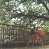
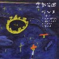
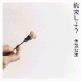
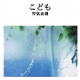

strange music page
japanese pops * * * kukikodan
#もーヤバイくらいはまってます。
あまり一つのバンドだけにのめりこむ事は無かったんですけどね、今まで。
下北沢の本屋に行って、ちょっと何かが違うような気もした"1999空気公団"まで買う始末。
でもねー、スバラシイですよ。ゆるーいポップスに聞こえるんですけど、日常の中の緊張感っていうか、何か他のバンドとは違う"空気"を持ってるよーな。
www.kukikodan.com
|
|
#新宿タワレコにて。ちょい前にdirect(インディーズの音が色々ちょっとずつ聴けるCD付きの雑誌)のCDに収録されてた、このアルバムの1曲目がとても気に入っていたので。
1曲目と4曲目が好きです。特別な事とか何一つないポップスなんですけど、なんだか自然でとても落ちつく音です。(1999.11.27)
- 田中さん、愛善通りを行く
- 退屈
- ここだよ
- かくれてばっかり
- 気持ち
作詞・作曲 山崎ゆかり
- 山崎ゆかり (vocals,chorus)(organ on 2.)
- 小山いずみ (piano on 1.3.4.5.)(chorus on 1.2.4.5.)
- 戸川由幸 (bass,guitars)(chorus on 2.4.5.)
- 石井敦子 (organ on 1.3.4.5.)(accordion on 5.)(chorus on 1.2.4.5.)
- 太田宏司 (drums)
coa records: COAR-0002 (1999.10.18)
#そしてミニアルバム"ここだよ"を買って二週間でこっちも買ってしまいました。本当に良すぎです。最近本当にこれ(とミニアルバム)ばっかり聴いてます。以前にテープで出していた音源を1枚のCDにまとめたモノみたいです。お世辞にも演奏とか音質とかのクオリティ高いとは言えないアルバムですが、この雰囲気はとても好きです、1曲1曲ほとんど全部好きで。
シュガーベイブとかサニーデイサービスがとかひきあいに良く出されてるみたいですけど。個人的にはそれらの数10倍好きです。実際、曲作ってMTRで録音してみてという音、そのまんまなんですけど。音楽聴いて、こんなにすーっと入りこんでくるような感覚も滅多にない事。押しつけがましくなくて、引っ込み思案でもなくて、自然に会話してるような、そんな音。ちなみにバンドの人達は私と同世代の人達みたいです、珍しく少しだけ共感。
そいえば、タワレコで買った時に山積みになってました。結構売れているみたいですね。私は普段は変なのばっかし聴いてるわけですけど、やっぱこーゆー素直に良いと思える人達が評価されてるってのは嬉しいですね。(1999.12.13)

- たまに笑ってみたり
- レモンを買おう
- 休日
- 猫になる
- 夜から朝へ
- 今朝少しそう思った (320mix)
- ハナノカゲ
- 2月24日
- 窓辺
- 別れ
- 素晴らしき一日
- 休日 (スタジオライブ)
- 今朝少しそう思った
- 僕らのひみつ
- さかさま
- 山崎ゆかり
- 小山いずみ
- 戸川由幸
- 石井敦子
- 太田宏司 (drums)
- 石坂義晴 (guitars,vocals on 12.)
Bumblebee Records: BBCDE-004 (1999.11.7)
#発売日、どーしても仕事だったので友達に頼んで買っておいてもらいました、一応初回のブックレットをゲットしました。
自然なような、でも不思議な存在感です。どーしてこんな雰囲気を録音できるのかわからないですけど、やっぱ少し特別なモノと思います。良い曲とか良い演奏とか良いプロデュースとか、そんな事とはちょっと別なCDです。(自分の思い入れとかそういう事もあるのかも知れないですけど、自分にとっては少なくとも)
音的には前回よりも凝ってるみたいです、1曲目の頭からコーラスではじまります。全然詰めこんでる感じはしないんですけど、結構色々な楽器の音がします。遠くから聞こえて来るようなxylophoneの音とか、よーく聴くと色々発見があります。
さすがに3曲目の似合わないノリノリの曲はどーかと思ったけど....
あんまり歌詞とかを気にして聴く事も(私は)無いんですけど、言葉がすっと入ってくるような感覚を持てる事もなんだかとても気持ち良いです。(2000.5.27)
あ、
空気公団のホームページはここです。

- 優しさ
- 紛れて誰を言え
- あおきいろあか
- だあれも
- 呼び声
- 山崎ゆかり
- 小山いずみ
- 戸川由幸
- 石井敦子
- 太田宏司 (drums)
- 棚谷祐一 (whistle on 2.)
coa records: COAR-0004 (2000.5.26)
#このLPの販売会で9月に下北沢のフィクショネスへ昼過ぎくらいに行ってきました。もーとっくに売りきれてて有りませんでした(販売会は12時からだったみたい)
平日渋谷のレコード屋とか行けないので、結局弟に電話して買ってきてもらいました。久しぶりに何かを入手するのに執着持って。
そんなわけで空気公団の「春」3号、レコード付き。冊子の内容はクラムボンとHARCOと曽我部恵一との対談。曲はQuipの雑誌に付いてたのとかコンピレーションに入ってたのとか、B面最後の曲は新録。
内容あまりにも好きなんでいちいち書きませんけど、とにかくこのレコードが自分の家のターンテーブルの上を廻ってるだけで少し幸せな気分。(2000.10.12)
- 季節
- さかさま
- あさの弾み (long version)
- 素晴らしき一日
- ハナノカゲ
- 田中さん、愛善通りを行く
- 自転車バイク
- 紛れて誰を言え
- おはよう
- 山崎ゆかり
- 戸川由幸
- 小山いずみ
- 石井敦子
- 太田宏司
KUKIKODAN: KKCL-01
#これ出たの6月末で、旅行行ってる間に「日本帰ったら買うCD」の一番でした。
本みたいな感じの変形ジャケット、相変わらず凝っています。
で、メジャーからのリリースになって妙に洗練されちゃったら嫌だな～なんて思ってました。
聴いてみて安心しました、なんだか包み込むような相変わらずのゆっくりしたテンポと、心地よいちょっとアンバランスな感覚。
さすがに録音はかなりクリアな感じになりました。前のカセットテープっぽい音もちょっと懐かしいんですけど、変にドライな音にはなってないんで、まぁOKかと。

- お手紙
- 夕暮れ電車に飛び乗れ
- たまに笑ってみたり (スタジオライブ)
- 動物園のにわか雨
- 田中さん、日曜日ダンス
- ビニール傘
- 線の上
- 遠く遠くトーク (スタジオライブ)
- うしろまえ公園
- 融
produced by 空気公団 and 棚谷祐一
except track5 produced by 空気公団
- 山崎ゆかり
- 小山いずみ
- 戸川由幸
- 石井敦子
- 太田宏司 (drums on 1.2.3.6.8.9.10.)
- 棚谷祐一 (tambourine on 1.)(shaker on 4.)
- 田村玄一 (pedal steel on 2.)
- 平田佳広 (drums on 4.7.)
- 三沢泉 (percussions on 6.)
- 荒井良二 (guitars on 8.)
- 笹原清明 (hand-bell on 10.)
TOY'S FACTORY: TFCC-88178 (2001.6.21)
#なんだか "BOOK CD" ってコンセプトみたいです。3曲入りのマキシシングル。
ライナーがCDの半分のサイズで、ちょっとしたミニコミみたいな感じになってます。まぁ正直言って冊子の中味にはあんまり興味ないんですけど、相変わらずちょっと凝ったような事しています。
2曲目には、キマタツトム(シャーペン),青木慶則(HARCO),石坂義晴(Advantage Lucy)参加。曲の最初のコーラスをキマタツトムさんが歌ってるんですけど、なんだか空気公団独特のちょっと変わったフレーズに男の声が乗るとかなりヘンな感じです。そんなで改めて山崎ゆかりさんてスゴイのかな、とか思いました。
ちなみに「わかるかい？」も曲の途中を無理矢理アタマに持ってきた変わった雰囲気の曲。でもピアノとギターが入る瞬間に何か世界が広がっていくような.....2分ちょいの短い曲ですけど、とても印象的。
メジャーになっても洗練されるどころか、ますます独特になっていくみたいです。凄い好きです。(2001.10.24)
- わかるかい？
- 白(スタジオライブ)
- トントンドア
- 山崎ゆかり
- 小山いずみ
- 戸川由幸
- 石井敦子
- 角田亮次 (drums on 1.)
- キマタツトム (acoustic guitar,vocal on 2.)
- 石坂義晴 (electric guitar,chorus on 2.)
- 青木慶則 (drums,chorus on 2.)
TOY'S FACTORY: TFCC-89007 (2001.10.24)
#ちょっと落ち着いちゃった気がしなくもないです。それでも自分には精神状態変えるくらいの力があるよーな気がします、そんな感じのポップス。最近の人達の中では群を抜いて好きな人達です。
前作から小山いずみさんが脱退して、3人になっちゃってます。そのせいかわからないですけど、ちょっと隙間のあるような感じ。なんかもう一人分の音が入るだけの隙間が残ってるような気がするんですよね。コーラスのせいかな？
すこし聴いただけだと地味な感じですけど、やっぱりアレンジとか相当凝ってるみたいです、なんかハコの中から外に抜けていくよーな不思議な感覚。
3曲目は既発の曲です、QUIPのコンピとLPに入ってた曲。ゆったりとしたテンポの曲になってます。
そいや、クレジットの"エムトロン"ってなんだろう？メロトロンみたいな音してるけど。(2002.6.19)

- 灰色の雲が近づいている
- 思い出俄欄道
- あさの弾み
- 約束しよう
- それはまるで
- 山崎ゆかり (vocals,chorus)(piano on 3-5.)(rhodes on 1.2.)(marimba on 1.4.5.)(windchime on 2.)(emtron on 3.)
- 戸川由幸 (bass,guitars,tambourine)(tambourine on 1.)(marimba on 4.)
- 石井敦子 (organ on 1-4.)(emtron on 5.)(handbell on 2.)(bongo on 3.)
- 矢部浩志 (drums on 1.2.4.5.)
- 鳥羽修 (guitar on 3.)(木の実の鈴 on 1.)
- 太田宏司 (drums on 3.)
- 及川茂 (ocarina on 1.)
TOY'S FACTORY: TFCC-86109 (2002.6.19)
#えーと久々の新譜。TOY'SからではなくCOA RECORDSからのリリース。
前回に感じた、空間のスキマみたいのが埋まった感じがしました。今回はリズムに対する言葉の当てはめ方が面白かったです。相変わらず色々試行錯誤してるよーな妙なアレンジとか、押し付けがましくないメロディーとか好きです。
今回はドラムがcyclesの中原由貴さんになってます。鳥羽修さんは去年カーネーションをやめちゃってるんでしたっけ？(2003.4.20)

- 白のフワフワ
- 音階小夜曲
- 季節の風達
- あかり
- 電信
- 今日のままでいることなんて
- 壁に映った昨日
- 例え
- 旅をしませんか
- こども
＋おかえりただいま
- 山崎ゆかり (vocals,chorus,synthesizers,piano,glocken)
- 戸川由幸 (bass,guitars)
- 石井敦子 (organ,piano,accordion)
- 中原由貴 (drums on 1.2.3.4.5.7.9.10.)
- 鳥羽修 (guitars on 1.3.6.7.8.9.10.)
- 高橋結子 (percussion on 1.2.3.8.)
- 荒井良二 (vocals on 3.)
- 石坂義晴 (guitars on 5.)
- 加藤千晶 (chorus on 6.)
- 七尾旅人 (chorus on 9.)
coa records: COAR-0021 (2003.4.20)
#空気公団の新譜、ミニアルバムです。今回のCDと4/18のライヴで「第一期空気公団終了」だそうです。（石井敦子さん結婚だそうで・・・）
今回のミニアルバムはほとんどメンバーだけでの録音で、最初の頃の宅録っぽい雰囲気がちょっと戻ってきたような感じが有ります。とても個人的な感覚なんですけど、少し対象との距離が縮まったよーな印象を受けました。
相変わらずちょっとポップスの領域をはみだすよーな編曲。やっぱり「どこが良い」とか「どこが好き」とか上手く文章には出来ないんですけど、何かこのバンドでしか味わえないような微妙な緊張感が有るように思います。この後空気公団がどーなっちゃうのか知らないですけど、注目しつづけてみたいなと思います。(2004.1.20)
- ねむり
- とおりは夜だらけ
- 日々
- 歩く
- どこにもないよ
- 窓越しに見えるのは
produced and arranged by 空気公団
- 山崎ゆかり (vocals,chorus,synthesizers,xylophone)
- 戸川由幸 (bass,guitars)
- 石井敦子 (organ,chorus)
- 太田宏司 (drums on 2.3.6.)
- 中原由貴 (drums on 2.)
coa records: COAR-0027 (2004.1.20)
#えーと、空気公団の新曲目当てだったんだけど、他の収録曲もすげー良かったです。QYPTHONEはDRIVE TO 2000で見たときより良かったですし、イノトモと栗コーダーは言う事無しかな。あとシャーペンが気に入りました、男ボーカル好きになるって珍しいんですけど、ほんとは。
そいでもやっぱし空気公団、軽快な曲、好き好き。(2000.6.4)
- yes, mama ok?/問と解
- QYPTHONE/Love from the Cubpid
- イノトモ/溶けてゆく午後
- 空気公団/自転車バイク
- 栗コーダーカルテット/バオバブ街道を行く
- MOTOCOMPO/LIGHTS OUT
- シャーペン/三番線
- Rocky Shack/クリスマスソング
coa records: COAR-0003 (2000)
#えーと渋谷タワレコで買った"Quip magazine"の付属CD。
- EBIKERID/Eric & Angie
- HOLIDAY FLYER/clover valley road
- 空気公団/あさの弾み
- Starlet/in the disco
- Linus of Hollywood/Say Hello To Another Goodbye
- Masters of the Hemisphere/Everybody Knows Canada
- luminous orange/walkblind
- HAPPY SPACE GAN/ソル☆ソル
- kincaid/keskesay
- Chewy/second hand magic
- Ca-p/FRIGHT RECORDER
- wolfie/little bee is dancin'
- WATER GUN/MORE HASTE, LESS SPEED
- DRESSY BESSY/IF YOU SHOULD TRY TO KISS HER
- The Mendoza Line/if i am not what you are used to
- CHICAGO BASS/Carolina
- June & the Exit Wounds/How Much I Really Loved You
- 直枝政弘&BROWN'NOSE/JUICY LUCY
QUIP-004